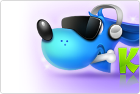
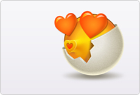

Kudog酷狗科技是中国领先的数字音乐交互服务提供商，沐川系为kugou产品提供的品牌形象全新设计。

Kudog酷狗科技是中国领先的数字音乐交互服务提供商，沐川系为kugou产品提供的品牌形象全新设计。
一款随笔软件的logo的设计，采用灯与笔的结合。灯泡代表内心的想法的再现，笔代表请用户随时记录自己的想法与经历。
一款表情形象设计，心情与嘴型变化存在着微妙关系，眼睛是心灵的窗户，嘴巴同样可以。

Mr Egg表情设计，从打破的鸡蛋形象着手，通过各种表情表现提前来到新世界的鸡蛋的单纯的心理。